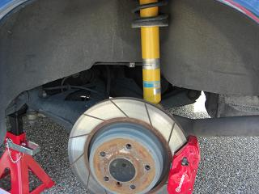
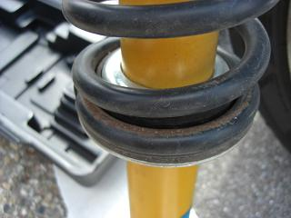
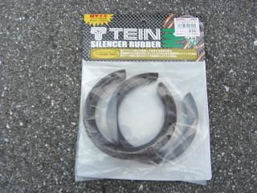
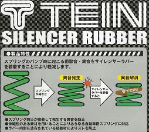
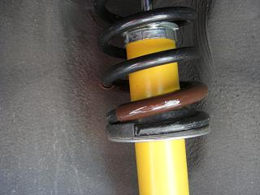

 車体を揺らしても音はせず、、 段差を乗り越えると「コツコツ」や「グリグリ」と異音が。。 この時点では、異音の原因が分からなかったので とりあえず、異音のヒドイ左側のサスを外してみた。
|
 良く見ると･･･ コイルにアブソーバーを交換した時には無かった錆が＾＾； 擦れている=異音の原因になるかも？
|
  ってことで、オートバックスへコレを買いに行った。 このラバー、S,M,LとサイズがありMサイズが装着可能なサイズだった。 |
 干渉しそうなところに巻きつけるだけ。 内側には、ズレを防止するための粘着剤が塗布されている＾＾/ 結局、サスを外さなくても出来る作業だった。。 肝心の異音は９割ぐらい改善された＾＾ でも、まだどこかで小さく「コツッ」と鳴る。。 う～ん・・・ コイルを支える上下のパッドも劣化していたので、次はこれを交換してみようと思う。
|